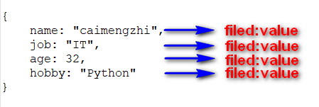

MongoDB 基本介绍
1. 介绍¶
1.1 MongoDB¶
MongoDB 是由C++语言编写的，是一个基于分布式文件存储的开源数据库系统。在高负载的情况下，添加更多的节点，可以保证服务器性能。MongoDB 旨在为WEB应用提供可扩展的高性能数据存储解决方案。
MongoDB 将数据存储为一个文档，数据结构由键值(key=>value)对组成。MongoDB 文档类似于 JSON 对象。字段值可以包含其他文档，数组及文档数组。

1.2 特点¶
- MongoDB 是一个面向文档存储的数据库，操作起来比较简单和容易。
- 你可以在MongoDB记录中设置任何属性的索引 (如：FirstName="Sameer",Address="8 Gandhi Road")来实现更快的排序。
- 你可以通过本地或者网络创建数据镜像，这使得MongoDB有更强的扩展性。
- 如果负载的增加（需要更多的存储空间和更强的处理能力） ，它可以分布在计算机网络中的其他节点上这就是所谓的分片。
- Mongo支持丰富的查询表达式。查询指令使用JSON形式的标记，可轻易查询文档中内嵌的对象及数组。
- MongoDb 使用update()命令可以实现替换完成的文档（数据）或者一些指定的数据字段 。
- Mongodb中的Map/reduce主要是用来对数据进行批量处理和聚合操作。
- Map和Reduce。Map函数调用emit(key,value)遍历集合中所有的记录，将key与value传给Reduce函数进行处理。
- Map函数和Reduce函数是使用Javascript编写的，并可以通过db.runCommand或mapreduce命令来执行MapReduce操作。
- GridFS是MongoDB中的一个内置功能，可以用于存放大量小文件。
- MongoDB允许在服务端执行脚本，可以用Javascript编写某个函数，直接在服务端执行，也可以把函数的定义存储在服务端，下次直接调用即可。
- MongoDB支持各种编程语言:RUBY，PYTHON，JAVA，C++，PHP，C#等多种语言。
- MongoDB安装简单。
2. 安装¶
2.1 下载安装¶
下载地址: https://www.mongodb.com/download-center/community
[root@leco src]# wget https://fastdl.mongodb.org/linux/mongodb-linux-x86_64-4.0.6.tgz --2019-02-27 09:42:36-- https://fastdl.mongodb.org/linux/mongodb-linux-x86_64-4.0.6.tgz Resolving fastdl.mongodb.org... 13.33.186.136, 13.33.186.26, 13.33.186.247, ... Connecting to fastdl.mongodb.org|13.33.186.136|:443... connected. HTTP request sent, awaiting response... 200 OK Length: 73265692 (70M) [application/x-gzip] Saving to: “mongodb-linux-x86_64-4.0.6.tgz” 100%[=============================================================================================================================================>] 73,265,692 1021K/s in 98s 2019-02-27 09:44:15 (733 KB/s) - “mongodb-linux-x86_64-4.0.6.tgz” saved [73265692/73265692]
2.2 安装¶
[root@leco src]# tar xf mongodb-linux-x86_64-4.0.6.tgz [root@leco src]# cd mongodb-linux-x86_64-4.0.6 [root@leco mongodb-linux-x86_64-4.0.6]# ls bin LICENSE-Community.txt MPL-2 README THIRD-PARTY-NOTICES [root@leco src]# mv mongodb-linux-x86_64-4.0.6 /usr/local/ [root@leco src]# cd /usr/local/ [root@leco local]# ln -sf mongodb-linux-x86_64-4.0.6/ mongo
注意
我使用的是二进制包，直接解压即可使用，可以根据自己情况安装方式， 1. 二进制安装 2. 在线安装 3. 离线安装
2.3 添加环境变量¶
- 临时生效[重启后就没了]
[root@leco local]# export PATH=/usr/local/mongo/bin:$PATH
- 永久生效
[root@leco mongo]# tail -2 /etc/profile # add by taotaolinux for mongodb 4.0 export PATH=/usr/local/mongo/bin:$PATH [root@leco mongo]# source /etc/profile
2.4 配置¶
[root@leco ~]# cd /usr/local/mongo [root@leco mongo]# ls bin LICENSE-Community.txt MPL-2 README THIRD-PARTY-NOTICES [root@leco mongo]# mkdir conf [root@leco mongo]# mkdir -p /usr/local/mongodb/data/db [root@leco mongo]# mkdir -p /usr/local/mongodb/logs [root@leco mongo]# cd conf/ [root@leco conf]# vim mongodb.conf [root@leco conf]# cat mongodb.conf dbpath = /usr/local/mongodb/data/db logpath = /usr/local/mongodb/logs/mongodb.log port = 27017 fork = true bind_ip=0.0.0.0 [root@leco mongo]# tree . . ├── bin │ ├── bsondump │ ├── install_compass │ ├── mongo │ ├── mongod │ ├── mongodump │ ├── mongoexport │ ├── mongofiles │ ├── mongoimport │ ├── mongoreplay │ ├── mongorestore │ ├── mongos │ ├── mongostat │ └── mongotop ├── conf │ └── mongodb.conf ├── LICENSE-Community.txt ├── MPL-2 ├── README └── THIRD-PARTY-NOTICES 2 directories, 18 file
2.5 启动¶
[root@leco mongo]# mongod -f /usr/local/mongo/conf/mongodb.conf about to fork child process, waiting until server is ready for connections. forked process: 18924 child process started successfully, parent exiting [root@leco mongo]# ps axf|grep mongod 18963 pts/0 S+ 0:00 \_ grep mongod 18924 ? Sl 0:00 mongod -f /usr/local/mongo/conf/mongodb.conf [root@leco mongo]# netstat -lnp|grep 27017 tcp 0 0 0.0.0.0:27017 0.0.0.0:* LISTEN 18924/mongod unix 2 [ ACC ] STREAM LISTENING 66911078 18924/mongod /tmp/mongodb-27017.sock [root@leco mongo]#
配置文件解释
dbpath = /usr/local/mongodb/data/db # 数据文件存放目录 logpath = /usr/local/mongodb/logs/mongodb.log # 日志文件存放目录 port = 27017 # 端口 fork = true # 以守护程序的方式启用，即在后台运行 bind_ip=0.0.0.0 # 允许所有的连接
2.6 docker安装¶
docker pull mongo docker run -itd --name=mongo_test -p 27017:27017 mongo
3. 概念介绍¶
在mongodb中基本的概念是文档、集合、数据库，在其他NoSQL中对比
| SQL术语/概念 | MongoDB术语/概念 | 解释/说明 |
|---|---|---|
| database | database | 数据库 |
| table | collection | 数据库表/集合 |
| row | document | 数据记录行/文档 |
| column | field | 数据字段/域 |
| index | index | 索引 |
| table joins | 表连接,MongoDB不支持 | |
| primary key | primary key | 主键,MongoDB自动将_id字段设置为主键 |
3.1 数据库¶
一个mongodb中可以建立多个数据库。
MongoDB的默认数据库为"db"，该数据库存储在data目录中。
MongoDB的单个实例可以容纳多个独立的数据库，每一个都有自己的集合和权限，不同的数据库也放置在不同的文件中。
"show dbs" 命令可以显示所有数据的列表。
[root@leco mongo]# mongo
MongoDB shell version v4.0.6
sconnecting to: mongodb://127.0.0.1:27017/?gssapiServiceName=mongodb sho^HsImplicit session: session { "id" : UUID("6b210996-2e69-4e35-bd6d-7ee0a946cdc5") }
^H^H^H^H^HMongoDB server version: 4.0.6
Welcome to the MongoDB shell.
For interactive help, type "help".
For more comprehensive documentation, see
http://docs.mongodb.org/
Questions? Try the support group
http://groups.google.com/group/mongodb-user
Server has startup warnings:
2019-02-27T09:59:22.485+0800 I STORAGE [initandlisten]
2019-02-27T09:59:22.485+0800 I STORAGE [initandlisten] ** WARNING: Using the XFS filesystem is strongly recommended with the WiredTiger storage engine
2019-02-27T09:59:22.485+0800 I STORAGE [initandlisten] ** See http://dochub.mongodb.org/core/prodnotes-filesystem
2019-02-27T09:59:23.449+0800 I CONTROL [initandlisten]
2019-02-27T09:59:23.449+0800 I CONTROL [initandlisten] ** WARNING: Access control is not enabled for the database.
2019-02-27T09:59:23.449+0800 I CONTROL [initandlisten] ** Read and write access to data and configuration is unrestricted.
2019-02-27T09:59:23.449+0800 I CONTROL [initandlisten] ** WARNING: You are running this process as the root user, which is not recommended.
2019-02-27T09:59:23.449+0800 I CONTROL [initandlisten]
2019-02-27T09:59:23.450+0800 I CONTROL [initandlisten]
2019-02-27T09:59:23.450+0800 I CONTROL [initandlisten] ** WARNING: /sys/kernel/mm/transparent_hugepage/enabled is 'always'.
2019-02-27T09:59:23.450+0800 I CONTROL [initandlisten] ** We suggest setting it to 'never'
2019-02-27T09:59:23.451+0800 I CONTROL [initandlisten]
2019-02-27T09:59:23.451+0800 I CONTROL [initandlisten] ** WARNING: /sys/kernel/mm/transparent_hugepage/defrag is 'always'.
2019-02-27T09:59:23.451+0800 I CONTROL [initandlisten] ** We suggest setting it to 'never'
2019-02-27T09:59:23.451+0800 I CONTROL [initandlisten]
2019-02-27T09:59:23.451+0800 I CONTROL [initandlisten] ** WARNING: soft rlimits too low. rlimits set to 7424 processes, 65535 files. Number of processes should be at least 32767.5 : 0.5 times number of files.
2019-02-27T09:59:23.451+0800 I CONTROL [initandlisten]
> show dbs;
admin 0.000GB
config 0.000GB
local 0.000GB
> db test > use local switched to db local > db local
3.2 特殊库¶
- admin： 从权限的角度来看，这是"root"数据库。要是将一个用户添加到这个数据库，这个用户自动继承所有数据库的权限。一些特定的服务器端命令也只能从这个数据库运行，比如列出所有的数据库或者关闭服务器。
- local: 这个数据永远不会被复制，可以用来存储限于本地单台服务器的任意集合
- config: 当Mongo用于分片设置时，config数据库在内部使用，用于保存分片的相关信息。
3.3 文档¶
文档是一组键值(key-value)对(即BSON)。MongoDB 的文档不需要设置相同的字段，并且相同的字段不需要相同的数据类型，这与关系型数据库有很大的区别，也是 MongoDB 非常突出的特点。
一个简单的文档例子如下：
{"site":"https://taotaolinux.github.io/books/", "name":"taotaolinux"}
DBMS 与 MongoDB 对应的术语：
| RDBMS | MongoDB |
|---|---|
| 数据库 | 数据库 |
| 表格 | 集合 |
| 行 | 文档 |
| 列 | 字段 |
| 表联合 | 嵌入文档 |
| 主键 | 主键 (MongoDB 提供了 key 为 _id ) |
注意
1. 文档中的键/值对是有序的。 2. 文档中的值不仅可以是在双引号里面的字符串，还可以是其他几种数据3. 类型（甚至可以是整个嵌入的文档)。 4. MongoDB区分类型和大小写。 5. MongoDB的文档不能有重复的键。 6. 文档的键是字符串。除了少数例外情况，键可以使用任意UTF-8字符。 7. 键不能含有\0 (空字符)。这个字符用来表示键的结尾。 8. .和$有特别的意义，只有在特定环境下才能使用。 9. 以下划线"_"开头的键是保留的(不是严格要求的)
3.4 集合¶
3.4.1 介绍¶
集合就是 MongoDB 文档组，类似于 RDBMS （关系数据库管理系统：Relational Database Management System)中的表格。集合存在于数据库中，集合没有固定的结构，这意味着你在对集合可以插入不同格式和类型的数据，但通常情况下插入集合的数据都会有一定的关联性。
比如，可以将以下不同数据结构的文档插入到集合中：
{"site":"https://taotaolinux.github.io/books/"}
{"site":"https://taotaolinux.github.io/books/","name":"taotaolinux"}
{"site":"https://taotaolinux.github.io/books/","name":"taotaolinux","num":66}
3.4.2 合法的集合名¶
- 集合名不能是空字符串""。
- 集合名不能含有\0字符（空字符)，这个字符表示集合名的结尾。
- 集合名不能以"system."开头，这是为系统集合保留的前缀。
- 用户创建的集合名字不能含有保留字符。有些驱动程序的确支持在集合名里面包含，这是因为某些系统生成的集合中包含该字符。除非你要访问这种系统创建的集合，否则千万不要在名字里出现$。
3.5 元数据¶
数据库的信息是存储在集合中。它们使用了系统的命名空间：
dbname.system.*
4 数据类型¶
下表为MongoDB中常用的几种数据类型。
| 数据类型 | 描述 |
|---|---|
| String | 字符串。存储数据常用的数据类型。在 MongoDB 中，UTF-8 编码的字符串才是合法的。 |
| Integer | 整型数值。用于存储数值。根据你所采用的服务器，可分为 32 位或 64 位。 |
| Boolean | 布尔值。用于存储布尔值（真/假）。 |
| Double | 双精度浮点值。用于存储浮点值。 |
| Min/Max keys | 将一个值与 BSON（二进制的 JSON）元素的最低值和最高值相对比。 |
| Array | 用于将数组或列表或多个值存储为一个键。 |
| Timestamp | 时间戳。记录文档修改或添加的具体时间。 |
| Object | 用于内嵌文档。 |
| Null | 用于创建空值。 |
| Symbol | 符号。该数据类型基本上等同于字符串类型，但不同的是，它一般用于采用特殊符号类型的语言。 |
| Date | 日期时间。用 UNIX 时间格式来存储当前日期或时间。你可以指定自己的日期时间：创建 Date 对象，传入年月日信息。 |
| Object ID | 对象 ID。用于创建文档的 ID。 |
| Binary Data | 二进制数据。用于存储二进制数据。 |
| Code | 代码类型。用于在文档中存储 JavaScript 代码。 |
| Regular expression | 正则表达式类型。用于存储正则表达式。 |
4.1 ObjectId¶
ObjectId
- 类似唯一主键，可以很快的去生成和排序，包含 12 bytes，含义是：
- 前 4 个字节表示创建 unix 时间戳,格林尼治时间 UTC 时间，比北京时间晚了 8 个小时
- 接下来的 3 个字节是机器标识码
- 紧接的两个字节由进程 id 组成 PID
- 最后三个字节是随机数
0|1|2|3|4|5|6|7|8|9|10|11
| | |
时间戳 |机器 |PID|计数器
由于 ObjectId 中保存了创建的时间戳，所以你不需要为你的文档保存时间戳字段，你可以通过 getTimestamp 函数来获取文档的创建时间:
> var newObject = ObjectId()
> newObject.getTimestamp()
ISODate("2019-02-27T02:24:17Z")
> newObject.str 5c75f4d1970254564966ebd4
4.2 字符串¶
BSON 字符串都是 UTF-8 编码。
4.3 时间戳¶
BSON 有一个特殊的时间戳类型用于 MongoDB 内部使用，与普通的 日期 类型不相关。 时间戳值是一个 64 位的值。其中：
- 前32位是一个 time_t 值（与Unix新纪元相差的秒数）
- 后32位是在某秒中操作的一个递增的序数
单个 mongod 实例中，时间戳值通常是唯一的。在复制集中， oplog 有一个 ts 字段。这个字段中的值使用BSON时间戳表示了操作时间。
4.4 日期¶
表示当前距离 Unix新纪元（1970年1月1日）的毫秒数。日期类型是有符号的, 负数表示 1970 年之前的日期。
> var mydate1 = new Date() //格林尼治时间
> mydate1
ISODate("2019-02-27T02:27:17.952Z")
> typeof mydate1
object
> var mydate1str = mydate1.toString() > mydate1str Wed Feb 27 2019 10:27:17 GMT+0800 (CST) > typeof mydate1str string
> Date() Wed Feb 27 2019 10:29:06 GMT+0800 (CST)